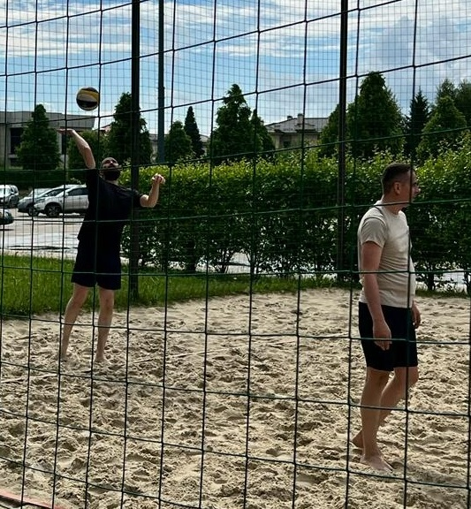

Моё увлечение - пляжный волейбол

Увлекаться пляжным волейболом начал в этом году.
До этого занимался волейболом в зале. Начинал заниматься волейболом в колледже. Участвовал в соревнованиях между колледжами в областных соревнованиях.
Пляжный волейбол заинтересовал возможностью попробовать свои силы и умения в новых условиях.
В любительском пляжном волейболе, как правило, играют короткие партии до 15 очков (решающая до 11) при смене сторон после 5 очков. Игроки одной команды могут коснуться мяча не более трёх раз, после чего обязаны вернуть его на сторону противника. Блок входит в число трёх касаний. Игрок также не может ударить по мячу два раза подряд (исключение: после блока и при первом касании).